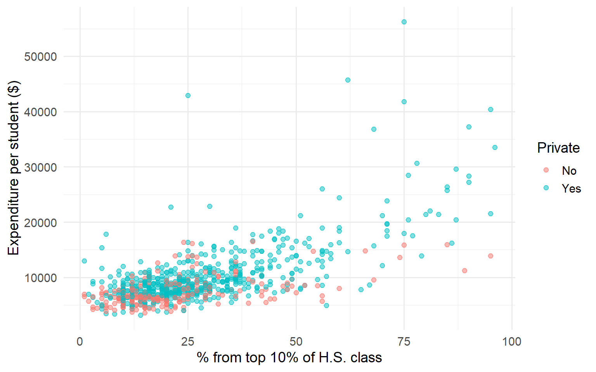
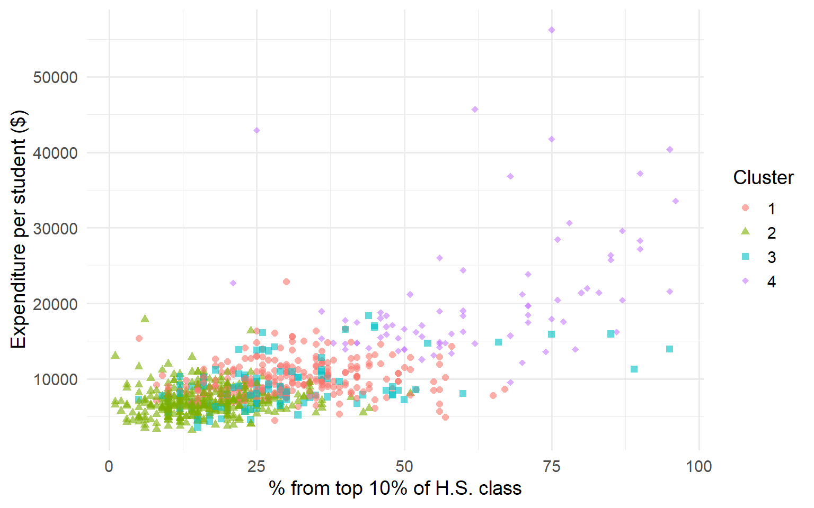
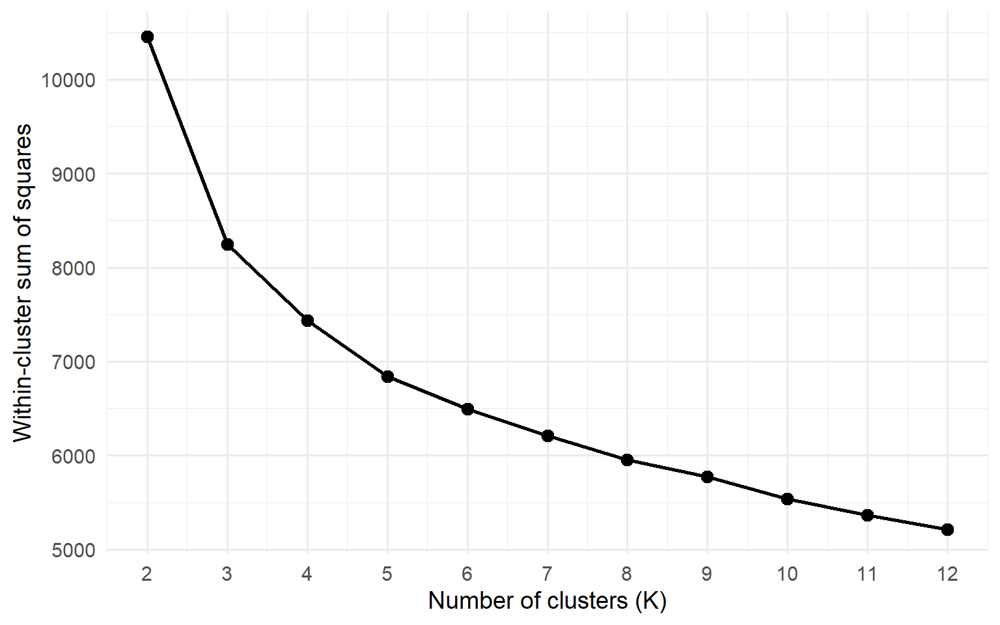

| Variable | Description |
|---|---|
| Private | Private or public institution |
| Apps | Applications received |
| Accept | Applications accepted |
| Enroll | New students enrolled |
| Top10perc | Pct. from top 10% of H.S. class |
| Expend | Instructional expenditure per student |
| Grad.Rate | Graduation rate |
Clustering
EDA in Higher Dimensions
Chapter 3
Clustering as EDA
The Central Question
When we have many variables, how do we simplify?
One approach: Group observations with similar profiles.
This is clustering—EDA extended to higher dimensions.
Unsupervised Learning
In supervised learning, we have a response variable \(Y\) to predict from features \(X\).
In unsupervised learning, we have only \(X\)—no labels, no “right answer.”
Goal: Discover structure in the data itself.
The EDA Spirit
“We are looking for unanticipated patterns in the data.”
Clustering shares EDA’s exploratory mindset:
- No single “correct” answer
- Results depend on choices we make
- Interpretation requires domain knowledge
The College Data
US Colleges (1995)
Exploring the Data
Figure 1: Expenditure vs. Top 10% students
Class Exercise
Before running any algorithm:
- How many private vs. public schools?
- What is the range of expenditure?
- Which variables are correlated?
- What groupings would you expect to find?
→ Build intuition before automation.
Grouping Variables
Manual Grouping
We can create groups from the data ourselves:
Split each variable at its median → four groups.
| Group | Top10perc | Expend |
|---|---|---|
| g_00 | below median | below median |
| g_01 | below median | above median |
| g_10 | above median | below median |
| g_11 | above median | above median |
The Four Groups

Figure 2: Manual grouping by median splits
The Limitation
Manual grouping works when we have 2-3 variables.
But the college data has 17 numeric variables.
We need an algorithm that can find groups in high-dimensional space.
Distance and Standardization
Euclidean Distance
To measure similarity, we use distance:
\[d(a, b) = \sqrt{\sum_{j=1}^{p} (a_j - b_j)^2}\]
Observations that are “close” in this sense have similar profiles.
The Scale Problem
| Variable | Min | Max | Range |
|---|---|---|---|
| Expend | 3186 | 56233 | 53047 |
| Apps | 81 | 48094 | 48013 |
| F.Undergrad | 139 | 31643 | 31504 |
| Accept | 72 | 26330 | 26258 |
| P.Undergrad | 1 | 21836 | 21835 |
Variables with larger ranges dominate the distance calculation.
The Solution: Z-Scores
Standardize each variable:
\[z_j = \frac{x_j - \bar{x}_j}{s_j}\]
After transformation:
- All variables have mean 0 and SD 1
- A 1-unit difference represents one standard deviation
- Variables contribute equally to distance
K-Means Clustering
The Core Idea
Partition \(n\) observations into \(K\) clusters such that each observation belongs to the cluster with the nearest centroid.
Objective: Minimize the total within-cluster sum of squares (WCSS):
\[\min \sum_{k=1}^{K} \sum_{i \in C_k} \|x_i - \mu_k\|^2\]
The Algorithm
- Initialize: Randomly select \(K\) observations as initial centroids
- Assign: Assign each observation to the nearest centroid
- Update: Recalculate centroids as the mean of assigned observations
- Repeat: Go to step 2 until assignments stop changing
K-Means on College Data
Figure 3: K-means clusters (K=4) projected onto two variables
Practical Note: nstart
K-means depends on random initialization.
Different starting points → different solutions.
Rule of thumb: nstart between 20 and 50.
Evaluating Clusters
Within-Cluster Sum of Squares
\[\text{WCSS} = \sum_{k=1}^{K} \sum_{i \in C_k} \|x_i - \mu_k\|^2\]
Lower WCSS = tighter clusters.
But WCSS always decreases as \(K\) increases—even with meaningless clusters.
Choosing K: The Elbow Method
Figure 4: WCSS decreases as K increases—look for the ‘elbow’
Reading the Elbow Plot
Steep decline: Adding clusters captures real structure.
Gradual decline: Diminishing returns—overfitting.
The “elbow” is where the rate of decrease sharply levels off.
Caveat: The elbow is subjective. Domain knowledge matters.
Comparing Clusterings
Jaccard Similarity
How do we compare two different clusterings?
The Jaccard index measures agreement by looking at pairs:
\[J = \frac{|A \cap B|}{|A \cup B|}\]
- \(J = 1\): Perfect agreement
- \(J \approx 0\): No agreement
Use cases: Compare K-means runs for stability; compare to known groupings.
Manual Grouping versus K-means
How well does K-means recover our manual grouping?
| group_label | 1 | 2 | 3 | 4 |
|---|---|---|---|---|
| 00 | 21 | 225 | 18 | 0 |
| 01 | 40 | 50 | 11 | 1 |
| 10 | 47 | 51 | 26 | 0 |
| 11 | 161 | 11 | 39 | 76 |
Some clusters align well with manual groups; others split across them.
Interpretation
What Do Clusters Mean?
The algorithm found groups—now ask what characterizes each one.
Profile each cluster:
- Compute cluster means for each variable
- Compare to overall means
- Look at distributions within clusters
Cluster Profiles
| cluster | n | Top10perc | Expend | Grad.Rate |
|---|---|---|---|---|
| 1 | 269 | 31 | 9975 | 74 |
| 2 | 337 | 16 | 7025 | 56 |
| 3 | 94 | 31 | 9204 | 59 |
| 4 | 77 | 62 | 20651 | 85 |
What story do these profiles tell?
Example Interpretation
Review of additional variable profiles suggests:
- Cluster 1: High selectivity, high expenditure → “Elite institutions”
- Cluster 2: Lower selectivity, moderate expenditure → “Regional schools”
- Cluster 3: Large enrollment, lower cost → “Large state universities”
- Cluster 4: Small, moderate selectivity → “Small privates”
Does this match domain knowledge?
Connections to ML
Clustering in the ML Pipeline
Clustering connects to supervised learning:
Preprocessing: Standardization is essential for many ML algorithms, not just clustering.
Feature engineering: Cluster membership can become a derived feature.
Model selection: The elbow heuristic → cross-validation, regularization.
Other Clustering Methods
| Type | Examples |
|---|---|
| Centroid-based | K-means, K-medoids |
| Density-based | DBSCAN, HDBSCAN |
| Hierarchical | Agglomerative, Divisive |
| Soft clustering | Gaussian mixture models |
K-means assumes spherical clusters of similar size. Other methods relax these assumptions.
Summary
Chapter 3: Key Takeaways
- Clustering is EDA for high-dimensional data
- Standardize first—z-scores equalize variable contributions
- K-means minimizes WCSS via iterative assignment and update
- The elbow method guides (but doesn’t determine) K selection
- Interpretation completes the analysis—profile your clusters
Key Formulas
| Concept | Formula |
|---|---|
| Z-score | \(z_j = \frac{x_j - \bar{x}_j}{s_j}\) |
| Euclidean distance | \(d(a,b) = \sqrt{\sum (a_j - b_j)^2}\) |
| WCSS | \(\sum_k \sum_{i \in C_k} \|x_i - \mu_k\|^2\) |
| Jaccard index | \(J = \frac{|A \cap B|}{|A \cup B|}\) |
Exercises
Team Exercise 1: Iris K-means
Using datasets::iris:
- Apply K-means with \(K = 3\) to the four numeric measurements.
- Cross-tabulate clusters with
Species. How well do they align? - Which species is hardest to separate? Why might this be?
Team Exercise 2: College Data Exploration
Using ISLR2::College:
- How many private vs. public schools? What is the range of expenditure per student?
- Use
GGally::ggpairs()on 4–5 variables. Which appear correlated? - What groupings would you expect to find—elite vs. non-elite? Large vs. small?
- Run K-means with \(K = 3\). Do the clusters match your expectations?
Team Exercise 3: Choosing K
You have customer transaction data and want to segment customers.
- How would you decide on the number of clusters?
- What are the pros and cons of the elbow method vs. silhouette scores?
- Your marketing team wants exactly 5 segments. How do you respond?
Discussion Questions
When is clustering exploratory vs. confirmatory?
K-means finds spherical clusters. What real-world data might violate this assumption?
How would you validate clusters when there are no true labels?
Resources
- ISLR2: An Introduction to Statistical Learning (Ch. 12)
- tidymodels: K-means with tidy data principles
- Wikipedia: Cluster analysis
- CRAN: dbscan package